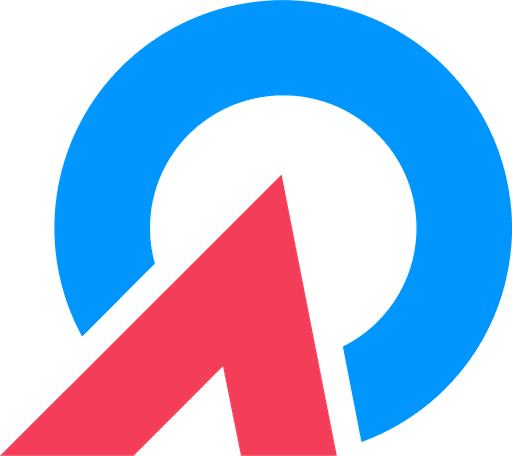

QUALIZEAL AI Center of Excellence Knowledge FabricKnowledge Fabric answers questions in plain language, cites the exact page it drew from, and tells you how confident it is. Nothing is invented.
The current revision requires a documented review before releaseSOP-04 · p.12 and the record must be retained for the full product lifePOL-11 · p.3.
It sits three revisions deep in a controlled document, inside a system one team owns, in a language the person asking does not read, or in the memory of a colleague who has moved on. The damage is rarely a wrong answer — it is a slow one, or a confident one taken from a superseded revision.
Permissions are applied before searching. Evidence is scored before writing. Those two sequencing decisions are what turn the platform's promises from behaviour into structure.
Most systems either refuse or invent. This one asks a single targeted question, folds your answer into a fresh search, and tries again. A refusal tells you the system failed. A logged clarification tells you exactly which piece of knowledge is missing — and how often somebody needed it.
Three zones carry the flow of work — content in, answer out, proof recorded. Two are cross-cutting: who is allowed to ask, and the foundation everything runs on.
The list below describes scope. Everything is part of the same system — there is no edition where citation or confidence is switched off.
Stated without reference to commercial figures — these are the outcomes the platform is built to produce.